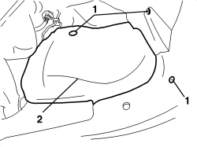

7055B66 ENGINE COMPARTMENT DUST COVER IN RIGHT FRONT WHEEL ARCH - R.R.
- Path
- Procedures > 70 FITTINGS > 7055 MOULDINGS AND PROTECTION > 7055B EXTERIOR PROTECTIONS > 7055B66 ENGINE COMPARTMENT DUST COVER IN RIGHT FRONT WHEEL ARCH - R.R.
- Kind
- repair procedure (removal / refitting; the operation number is the code)
- Applies to
- all engines; all production periods
- Interactive page
- https://sloeber94.github.io/elrnDB-aBrrSpdr/en/#/946002684
Applies to: all engines; all production periods
 Removing
Removing
 Refitting
Refitting- Position the vehicle on a lift.
- Raise the vehicle.
1. Undo the bolts fixing the dust cover.
2. Remove the dust cover releasing it from the additional wheel arch liner and from the lower engine compartment lining.

Applies to: all engines; all production periods
Refitting
Removing- Check that the dust protection is not damaged.
- Position the dust cover attaching it to additional wheel arch liner and the lower engine compartment lining.
- Tighten the bolts fixing the dust cover.
- Remove the vehicle from the lift.
Topics that link to this page (31)
- 1004B10 POWER UNIT WITH MANUAL GEARBOX - R.R
- 1004B14 POWER UNIT WITH AUTOMATIC TRANSMISSION R + R
- 1008A46 POWER UNIT RIGID SUPPORT - TIMING SIDE - R.R.
- 1020A20 CRANKCASE OIL SUMP - R.R CLEAN SURFACES FOR SEALANT APPLICATION
- 1020D14 FRONT CRANKSHAFT OIL SEAL COVER - R.R AND REPLACE SEALS FOR VERSIONS WITH OIL PUMP ON CRANKSHAFT, TIMING SIDE
- 1020D18 FRONT CRANKSHAFT COVER OIL SEAL - R.R.
- 1028H10 CONNECTING ROD AND PISTON SET - R.R
- 1032A10 CHAIN GEARS AND TIMING SYSTEM COMPONENTS R R
- 1032A12 TIMING SYSTEM DRIVE CHAIN - R.R
- 1032C33 TIMING SYSTEM FIXED HYDRAULIC TENSIONER - R R
- 1032C41 TIMING SYSTEM FIXED CHAIN TENSIONER PAD R R
- 1036L30 FRONT OIL SEAL FOR CAMSHAFT IN CAMSHAFT HOUSING - REPLACE
- 1056F46 PHASE TRANSFORMER SOLENOID, LEFT CYLINDER HEAD INTAKE OR EXHAUST - R.R.
- 1056F47 PHASE TRANSFORMER SOLENOID, RIGHT CYLINDER HEAD INTAKE OR EXHAUST - R.R.
- 1056F55 LEFT CYLINDER HEAD INTAKE OR EXHAUST CAM ANGLE SENSOR - R.R.
- 1084A40 ENGINE OIL LEVEL SENSOR - R + R
- 1084B12 ENGINE OIL PUMP - R+R
- 1084B45 TIMING CHAIN LUBRICATION NOZZLE - R.R
- 1088C10 WATER PUMP - R + R
- 1088C22 WATER PUMP PULLEY - R.R.
- 1088D24 WATER PUMP RIGID COOLANT INLET PIPE - R.R.
- 1092A10 CRANKSHAFT PULLEY - R + R
- 1092B91 WATER PUMP BALANCING SHAFT DRIVE CHAIN GEARS AND COMPONENTS R R
- 1092B92 WATER PUMP /BALANCING SHAFT DRIVE CHAIN HYDRAULIC TENSIONER R R
- 1092B93 WATER PUMP /BALANCING SHAFT DRIVE CHAIN TENSIONER PADS R R
- 1092G10 SINGLE ENGINE BELT - R.R
- 1092G14 ENGINE COMPONENT SINGLE BELT MOVING TENSIONER - R + R
- 4130B20 POWER STEERING PUMP - R.R.
- 5040A20 AIR CONDITIONING COMPRESSOR - R+R - INCLUDES FLUID LEVEL CHECK AND TOP UP IF NECESSARY
- 5040A26 AIR CONDITIONING COMPRESSOR SUPPORT - R.R.
- 5530A10 ALTERNATOR - R+R